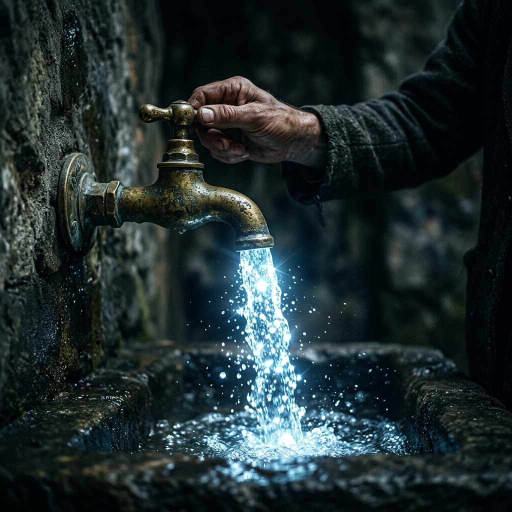

La Industria de la Enfermedad Crónica
Abre tu nevera o entra en un supermercado. El 95% de los líquidos que venden no son bebidas, son experimentos químicos diseñados para generar adicción y estrés oxidativo.
Bebidas Energéticas y Deportivas
Te venden colores neón y atletas sudando. La realidad: líquidos hipersaturados de azúcares y colorantes con un pH de 3.0 (tan ácido que roba potentes minerales de tus propios huesos para ser procesado). Te dan un pico de glucosa efímero a cambio de envejecer tus células.
El Engaño del "Agua Embotellada"
La mayor estafa de marketing de la historia moderna. Nos han convencido de pagar un extra por meter agua estancada y muerta dentro de un contenedor derivado del petróleo. Meses de almacenamiento en almacenes calurosos provocan lixiviación de microplásticos y disruptores endocrinos (BPA) directos a tu sangre.
El Agua de Grifo "Purificada"
Sí, está libre de bacterias mortales, pero a qué coste: cloro neurotóxico, flúor, metales pesados arrastrados por kilómetros de tuberías anticuadas. Es un agua biológicamente estresada, agrupada en "clusters" gigantes que te hinchan el estómago pero apenas hidratan la mitocondria.

Reclamando tu Biología Original
Cuando instalas un dispositivo médico Kangen en tu cocina, no estás comprando un filtro. Estás instalando una anomalía clínica en la Matrix moderna. Un manantial personal que replica el comportamiento eléctrico de las escasas aguas curativas vírgenes del planeta.
-
Del Estancamiento a la Vida (Corriente Eléctrica) El agua no debe pasarse meses pudriéndose en plástico. Debe estar estructurada, viva y vibrando con un potencial de óxido-reducción negativo (-ORP).
-
De Hidratación Pasiva a Reparación Activa Cada vaso que bebes ya no es simplemente H2O. Es una carga biológica de gas Hidrógeno Molecular (H2) que literalmente caza y neutraliza los radicales libres antes de que oxiden tu ADN.
"No estás envejeciendo o engordando porque sea tu destino genético. Estás acidificándote y secándote desde dentro por someter tu cuerpo al lavado de cerebro de hidratación de la sociedad de consumo."